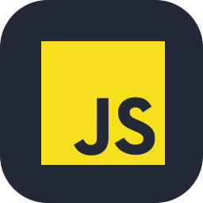
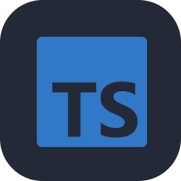
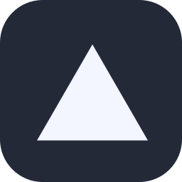
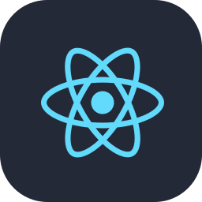
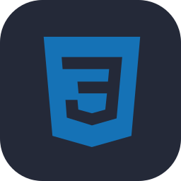

Cielo
Atuação em ambiente corporativo
Experiência profissional na Cielo. Para cargo, período e atribuições detalhadas, consulte o currículo em PDF.
Software engineer · São Paulo, BR
Backend Java · APIs · IA aplicada a software
Estudante de Ciência da Computação e profissional na Cielo. Construo sistemas claros, confiáveis e bem estruturados — da compreensão do problema à implementação, com foco em backend, APIs e integração de serviços.
Experiência
Atuação profissional e formação acadêmica.
Atuação em ambiente corporativo
Experiência profissional na Cielo. Para cargo, período e atribuições detalhadas, consulte o currículo em PDF.
Ciência da Computação · Em andamento
Estudos em programação, fundamentos de software e desenvolvimento de sistemas. Certificação Oracle Cloud Infrastructure 2025 Foundations Associate.
Competências
Tecnologias, práticas e idiomas.

JavaScript
TypeScript
Vercel
React HTML5
CSS3Projetos
Código, decisões e evolução.
API para simular juros simples e compostos, com modelagem de domínio e regras financeiras explícitas. Integração com indicadores do Banco Central está no roadmap.
Carteira digital que organiza compromissos financeiros e explica a composição dos valores. Integração Open Finance em sandbox; não realiza movimentações reais.
Agente pessoal com interface React/Vite e workflows orquestrados pelo n8n. Integrações externas exigem configuração e validação no ambiente.
Aberto a conversas sobre engenharia de software, projetos e oportunidades profissionais.